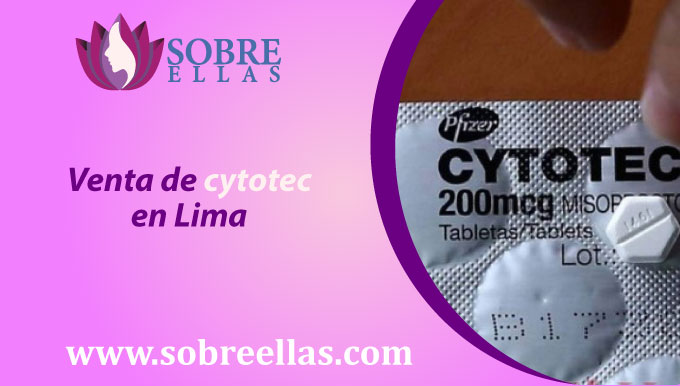

Cytotec delivery en lima
-
addContenido
En sobreellas encontraras pastillas abortivas en caso te encuentres pensando en realizar un aborto inducido a causa de un emabrazo no deseado. Contamos con tarifas muy accesibles que incluyen el delivery completamente gratis, escríbenos a los números de contacto de sobre ellas y realiza tu pedido. Nuestros especialistas están a la espera para guiarte durante todo el proceso.
Venta de cytotec con delivery en lima
¿Buscando un lugar de venta cytotec con delivery incluido en Lima? Hoy es tu oportunidad para resolver todos los problemas que estas presentando con respecto a un período que no baja y haber concebido un embarazo no deseado o no planificado. Encuentra en nuestra página sobre ellas soluciones a un retraso menstrual, ginecólogos y obstetras con la mejor experiencia del país te atenderán a través de nuestros canales de Whatsapp y telegram, obtén tu pastilla abortiva Cytotec con delivery incluido en Lima y todo el Perú.
Venta de cytotec en Lima
Cytotec es un medicamento que se vende en farmacias de Lima como Inkafarma, Mifarma, Farmacia Universal, entre otras. Los químicos farmacéuticos, que son personas que realizan la venta, solicitan una receta médica para que la venta de Cytotec se pueda concretar en Lima, lo que significa un problema para las mujeres porque no lo tienen. Es por eso que en sobre ellas, hacemos que adquirir esta pastilla abortiva sea fácil para las mujeres sin receta. La venta de Cytotec en Perú está 100% garantizada con nosotros y le proporcionamos las píldoras originales y selladas para que tenga un tratamiento de calidad para su retraso menstrual.
Comprar cytotec sin receta médica
Si ya te has hecho la prueba de embarazo y has dado positivo, escríbenos al Whatsapp. Sobre ellas nuestros especialistas te realizarán breves consultas para que podamos determinar la dosis de Cytotec que necesitas para ponerle fin a tu embarazo. Envíanos tu ubicación de entrega y nuestro equipo de delivery realizará la entrega de forma segura y rápida. Recuerda que puedes realizar un pedido contra entrega en caso sientas cierta desconfianza.
Delivery a domicilio de Cytotec
En Sobre Ellas se hace la venta de Cytotec Online. Entendemos que una de las decisiones más importantes que tomará al buscar un aborto es elegir el proveedor adecuado. Es por eso que ofrecemos la más alta calidad y las píldoras abortivas caseras más seguras disponibles.
Nuestras tabletas Cytotec de 200 microgramos son las píldoras abortivas más populares y fáciles de usar en el mercado. Nuestro servicio de entrega llega el mismo día, y no hay ningún cargo adicional por este servicio.
Nuestras clínicas y hospitales en Perú son algunos de los más seguros y confiables del mundo, y estamos comprometidos a proporcionar el mejor servicio posible a nuestros clientes. Gracias por considerarnos como su fuente de referencia para un aborto seguro y fácil en casa.
Cuanto cuesta Cytotec con Delivery
El coste de Cytotec puede variar dependiendo de dónde lo compres. Cytotec se puede obtener sin receta en algunas farmacias, pero también se puede comprar sin receta. El precio de Cytotec también varía dependiendo de la semana de embarazo que usted está tratando de interrumpir un embarazo.
El coste de Cytotec puede oscilar entre 200 y 400 soles. Si usted está tratando de interrumpir un embarazo, el proceso de conseguir Cytotec puede ser más complicado que simplemente pedir una receta de una farmacia. Sin embargo, si usted está comprando Cytotec por otras razones, como el aborto, el proceso de obtención de Cytotec será diferente para cada semana de embarazo. Pedir Cytotec hoy es la forma más fácil de asegurarse de recibirlo sin complicaciones.
¿Cómo tomar Cytotec?
Esta es una guía para tomar la píldora abortiva, Mifepristona. Esta guía es para mujeres que están de 14 a 46 semanas de embarazo. Recuerde tomar las tres dosis al mismo tiempo para garantizar el mejor resultado posible.
La píldora abortiva es un medicamento que puede interrumpir un embarazo. Se toma en tres dosis en el transcurso de un día. Es muy importante poner fin al proceso de aborto, pase lo que pase. Recuerde tomar las tres dosis al mismo tiempo para garantizar el mejor resultado posible.
Cytotec Oral
Para consumir este medicamento, primero debe disolver las tabletas en su boca. Después de hacerlo, pásalas. Debe esperar 30 minutos antes de repetir este proceso dos veces más. Debe observar horas más tarde una hemorragia, que debe consultar con nuestro personal. Te asesorarán gratuitamente. Solo debes ponerte en contacto con ellos a través de Telegram y WhatsApp.
Cytotec Vaginal
Para consumir el medicamento a través de la vagina, inserte cuatro píldoras en su vagina y deje que se disuelva. Después de 30 minutos, repita este proceso dos veces más. Verás el sangrado horas más tarde, lo cual es muy natural. Sin embargo, debe consultar con nuestro personal para obtener asesoramiento gratuito, y se puede llegar a ellos a través de Telegram y WhatsApp.
Preguntas frecuentes
¿Cytotec tiene efectos secundarios?
Los siguientes son efectos secundarios potenciales de tomar cytotec: dolor de estómago, sangrado, diarrea, presión torácica, sangrado vaginal, dificultad para respirar, vómitos y diarrea persistente. Otros efectos secundarios no tan comunes pueden incluir arritmia cardíaca, presión torácica, dificultad para respirar y mareos. Si se produce alguno de estos efectos secundarios, son muy normales y deben desaparecer después de que se haya tomado el medicamento por un tiempo.
Es algo probable que te receten analgésicos y antibióticos durante un corte con Cytotec, por esta razón en los paquetes que suministramos en nuestra web es que los puedes encontrar. Tener una infección después de pasar por este proceso no es muy común en estos casos, por la razón de que proporcionamos píldoras originales y cajas selladas, pero le recomendamos que consulte a su médico personal para el tratamiento con antibióticos.
¿Sirve cytotec para abortar?
Hay muchos embarazos no planeados en Lima Perú. Se estima que hay alrededor de 240.000 embarazos no planificados cada año en Perú, y alrededor de 210.000 en Lima.
Muchas mujeres en estas situaciones eligen tener un aborto, y hay muchos métodos diferentes disponibles. Un estudio realizado en Perú encontró que el método de aborto que es más efectivo es un aborto médico con el medicamento Cytotec. Este método es 92% efectivo, confirmando nuestra teoría de que Cytotec sirve para abortar.
Hay muchas clínicas de aborto diferentes en Perú, y es fácil encontrar una que le proporcione el método de aborto que necesita. También puede encontrar información sobre el aborto en Internet, y puede hablar con otras mujeres que han pasado por este proceso para obtener asesoramiento.
¿Puedo abortar con cytotec a domicilio?
Los abortos con cytotec son posibles en casa con la ayuda de nuestro personal de ventas. Antes de comenzar, debe tener las píldoras, por lo que primero debe comprarlas. También ofrecemos la opción de realizar la compra con nuestro personal de ventas y sin receta médica, todo gracias a nuestro conveniente y conforme proceso de entrega.
OJO: Recomendamos hacerte una prueba de embarazo Para determinar si está embarazada, debe hacerse una prueba de embarazo. Hay varios tipos de pruebas disponibles, y cada una le dará un resultado diferente. Si está embarazada, su prueba mostrará un resultado positivo. Si no está embarazada, su prueba mostrará un resultado negativo.
Si usted está experimentando cualquiera de los siguientes síntomas, es importante ver a su proveedor de atención médica para determinar si usted está experimentando un retraso menstrual o si usted está experimentando signos tempranos de embarazo:
- Sangrado leve
- Senos o pezones propensos o hinchados
- Fatiga
- Cefaleas
- Náuseas y/o vómitos
- Antojos o aversiones alimentarias
- Cambios en el estado de ánimo
- Micción recurrente.
Si usted está experimentando cualquiera de los siguientes síntomas, es importante tomar una prueba de embarazo tan pronto como sea posible para descartar signos tempranos de embarazo.
Indicaciones del cytotec
Cytotec es un medicamento que puede ayudar a resolver el retraso menstrual. Esto significa que puede ayudar a retrasar o prevenir la aparición de la menstruación. Cytotec es una píldora abortiva, lo que significa que se puede usar para interrumpir un embarazo. Está disponible en línea y en algunas farmacias en Perú. Por este motivo brindamos a continuación las indicaciones en las que se debe tomar este pastilla
Dosis de cytotec por semana de gestación
- Entre 4 y 6 semanas de embarazo - dosis de 4 pastillas de cytotec (800 mcg Cytotec)
- Entre 6 y 10 semanas de embarazo - dosis de 8 pastillas de cytotec (1600 mcg Cytotec)
- Entre 10 y 12 semanas de embarazo - dosis de 12 pastillas de cytotec (2400 mcg Cytotec)
¿Cytotec cuanto cuesta?
Si está embarazada y está considerando tomar la píldora abortiva llamada Cytotec, es importante tener en cuenta que el costo de la píldora puede variar según la dosis que tome. El precio de la píldora también dependerá de cuántas semanas de embarazo tengas. El coste de la píldora oscila entre 300 soles y 400 soles, que dependerá de la dosis que tomes.
Si tiene alguna duda sobre si debe o no tomar la píldora abortiva, nuestro equipo médico puede ayudarlo a tomar una decisión. Recuerda que estamos aquí para ayudarte, así que no dudes en pedir ayuda si la necesitas.